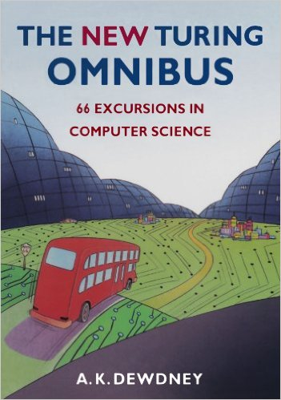

I'm a 19 year old Software Developer studying at the University Of Sheffield.
I like to fully utilise my time at University by being a part of several societies including: Strenght Sports, Photography, Enterprise, Kayaking, Stationary and Computer Science.
I'm facinated by all things technology and I've recently found Biocomputing to be extremely interesting.
| I'm currently reading Bio-Inspired Artificial Intelligent by Dario Floreano and Claudio Mattiussi to read further around my Biocomputing module and am finding the biology surrounding genetics in chapter 1 to be very intersting. I think biocomputing would be a really cool industry to get into. | |
|  | A list without The New Turing Omnibus would be an incomplete list. This is the book that solidified my choice on studying Computer Science at University, and I've found myself coming back to it time and time again to cover the content I study in class, such as The Halting Problem. |
| Logic in Computer Science by Michael Huth and Mark Ryan is helping to solidify my knowlage of predicate logic and am finding this book a very useful resourse in expanding my problem solving skills. |